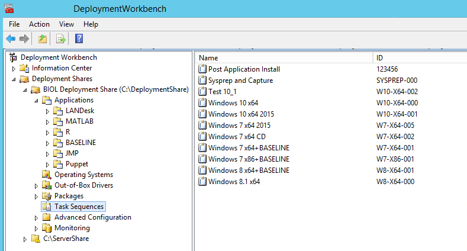
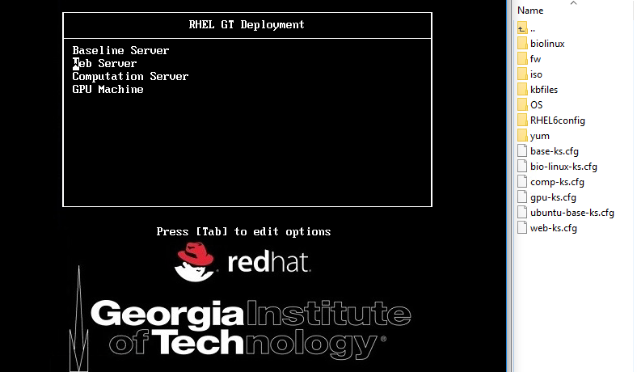
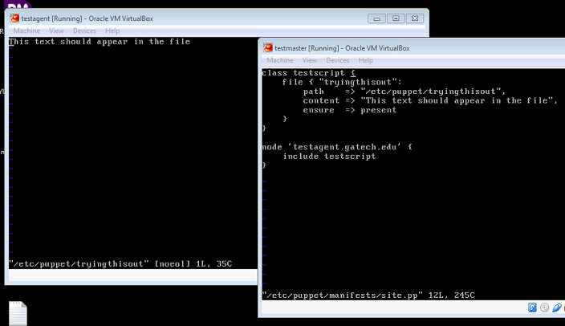

Professional Experience & Accomplishments
My work history is diverse in both private sector and government work. It also spans a wide range of IT support, Networking, Education, System Administration, and Software Engineering.
Strengths
My greatest strengths would be: diverse experience, ability to troubleshoot, and designing creative solutions for any given problem.
Career Goals
My current professional goals are: finish my graduate degree, and become involved in something that would make this world a better place.
Education
| University of West Georgia | Master of Science, Applied Computer Science | Fall 2017 |
|---|---|---|
| Clayton State University | Bachelor of Applied Science, Technology Management | May 2013 |
| Community College of the Air Force | Associate of Applied Science, Electronic Systems Technology | August 2012 |
Work Experience
IT System Administrator
November 2016 - Present
(April 2014 - November 2016 as IT Support Professional II)
Administers both Windows and Linux system servers for the George W. Woodruff School of Mechanical Engineering
Information Systems Supervisor
September 2013 - April 2014
(July 2007 – August 2010 as Senior IS Technician)
Led the park team of IT technicians and performed help desk and on-site support
Computer and Network Infrastructure Technician
August 2005 - December 2013
Performed base-level help desk service for tier 1 and networking issues
Integrated Technology Consultant/Instructor
August 2012 - August 2013
Provided technology guidance to the school in addition to teaching technology and math for 4th through 6th grade
Technology Project Coordinator
May 2011 - December 2011
Assisted the Senior Project Manager in coordinating assets of key IT projects
Accomplishments
Within my first few months at Georgia Tech, my focus became: automation. This was my introduction to System Engineering, and I thoroughly enjoyed it. One of my first accomplishments was automating Windows deployments using Microsoft Deployment Toolkit (MDT).

Having taken care of Windows deployments, I shifted my focus to automating our Linux deployments. I decided to use kickstart to automate our deployments for RHEL, Ubuntu, and BioLinux.

Now that our OS deployments had solid automation, it was time to automate our regular software updates/installation/maintenance. I decided to go with Puppet utilizing Foreman & Chocolatey. This is the first moment I was able to get a puppet client to handshake with a master server.
